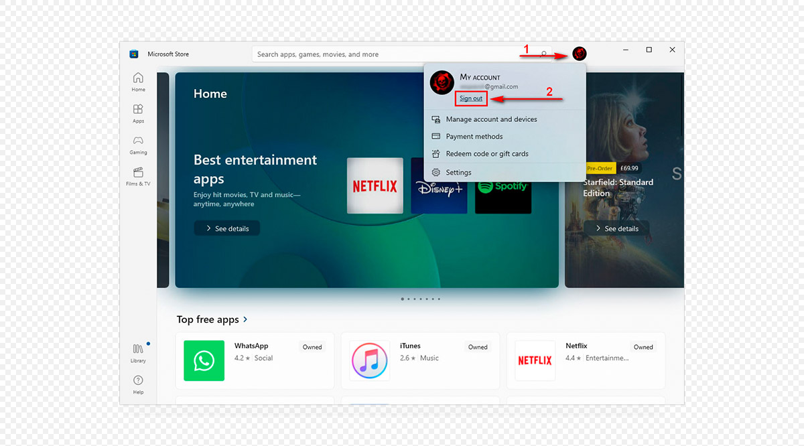

مرحبًا بك في دليلنا ! إذا كنت قد أكملت للتو عملية الشراء وتحتاج إلى إعداد حسابك، اتبع الخطوات البسيطة التالية
الخطوة 1:
قم بتسجيل الدخول إلى حسابك الشخصي في تطبيق اكسبوكس . إذا لم يكن التطبيق مثبتا على جهاز الكمبيوتر ، فقم بتثبيته من متجر مايكروسوفت.
إذا لم يكن لديك حساب شخصي حتى الآن ، فقم بإنشاء حساب جديد. أغلق تطبيق اكسبوكس.الخطوة 2:
قم بتشغيل المنشط (تنزيل). جنبا إلى جنب مع ذلك ، سيتم فتح متجر مايكروسوفت. قم بفك ضغط المنشط إلى سطح المكتب أو إلى مجلد منفصل. إذا لم يبدأ المنشط ، فقم بتعطيل برنامج مكافحة الفيروسات أثناء التنشيط. .
الخطوة 3:
تأكد من تسجيل الخروج من حساب Microsoft Store الخاص بك.
الخطوة 4:
انقر على أيقونة الحساب الجديد ، وانقر على الرابط تسجيل الدخول. لا تقم بإضافة حساب العمل أو المدرسة! خلاف ذلك ، سوف يفشل التنشيط.
الخطوة 5:
في نافذة "تسجيل الدخول" ، حدد "استخدام حساب مختلف" -> "حساب Microsoft" وانقر فوق "متابعة".
الخطوة 6":
سترى نافذة "تسجيل الدخول" أو "إضافة حساب Microsoft إلى Microsoft Store" اعتمادا على إصدار Microsoft Store على جهاز الكمبيوتر الخاص بك.
الخطوة 7:
أدخل مفتاح التنشيط الذي تم شراؤه في المنشط واضغط على الزر "1. تحقق من مفتاح التنشيط".
الخطوة 8:
بعد ذلك ، في المنشط ، اضغط على الزر "2. أدخل معلومات تسجيل الدخول وكلمة المرور الخاصة ب MS Store".
الخطوة 9:
انتظر حتى يقوم المنشط بإدخال اسم المستخدم وكلمة المرور.
الخطوة 10:
بعد المنشط يدخل بريد إلكتروني إضافي، سيبدأ العد التنازلي. انتظر حتى يتلقى المنشط رمز أمان Microsoft وإدخاله. لا تستخدم الماوس ولوحة المفاتيح أثناء العد التنازلي. قد يمنعك هذا من إدخال رمز الحماية وسيتعين عليك بدء إجراء التنشيط من البداية. إذا لم يتم استلام رمز الأمان ، فاقرأ الخطوات من 1 إلى 3 بعناية.
الخطوة 11:
بمجرد إدخال رمز الأمان ، يتم تسجيل دخولك باستخدام حساب Microsoft الخاص بنا ويمكنك تنزيل اللعبة المشتراة والمحتوى القابل للتنزيل ، إن وجد. يمكن إغلاق المنشط.
اهتمام!!! ، لا يمكن تنزيل الألعاب إلا من خلال تطبيق XBOX